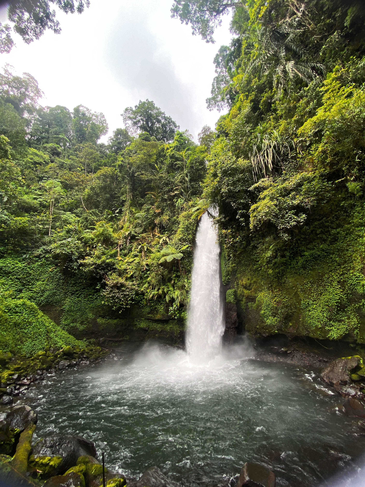
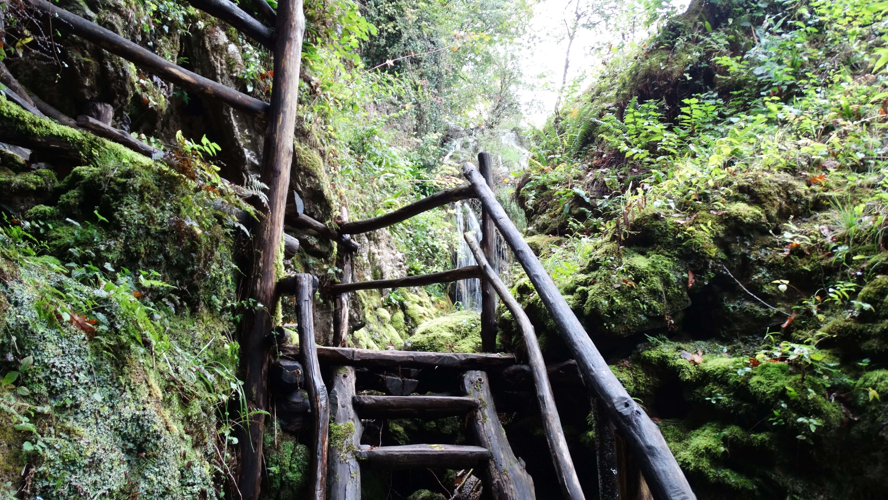

La Fortuna Waterfall: A Complete Guide to the 500 Steps

The majestic 70-meter drop of Río Fortuna Waterfall.
The La Fortuna Waterfall is undoubtedly one of the most breathtaking natural wonders in San Carlos, Costa Rica. Fed by the Fortuna River and tucked at the foot of the dormant Chato Volcano, this 70-meter (230 ft) cascade is a paradise for photography and nature lovers.
Essential Information (2026)
- 💰 Entrance Fee: $18 USD for adults / $5 for children.
- ⏰ Opening Hours: 7:00 AM to 4:00 PM daily.
- 📍 Location: 5km south from La Fortuna downtown.
- 🚶 Difficulty: Moderate (500 steep stairs).
The Hike: Down the 500 Steps
To reach the hidden oasis at the bottom, you must conquer the famous 500 stairs. While the path is paved and features strong handrails, the humidity and the steepness make it a great workout. It usually takes 15 minutes to go down and about 25-30 minutes to climb back up.

Can You Swim in La Fortuna Waterfall?
Yes, you can definitely swim! But there is a very important safety distinction you need to know. While you can enter the large pool right at the base of the waterfall, the water falling from 70 meters creates a powerful downward current and whirlpools. For your safety, it is recommended not to swim directly under the falling water.
💡 Expert Tips for Swimmers:
- Temperature: The water is surprisingly chilly (around 18-20°C / 65-68°F). It feels incredibly refreshing after the humid hike down, but be prepared for a cold shock!
- The River Pools: If the main pool feels too crowded or the current too strong, walk just 30 meters downstream. You will find calmer, shallower pools in the river that are perfect for relaxing.
- Water Shoes: The bottom of the river is covered in slippery volcanic rocks. Wearing water shoes (tevas or similar) will make your experience much more comfortable.
- Lockers: Don't leave your belongings unattended on the rocks while you swim. Use the lockers provided at the entrance near the restrooms.
Swimming here is a unique experience. You’ll be surrounded by massive canyon walls covered in bright green moss and tropical plants. Looking up from the water at the massive drop of the waterfall is a view you will never forget. Just remember that there are no lifeguards on duty, so always stay within your swimming abilities.